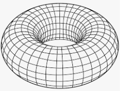
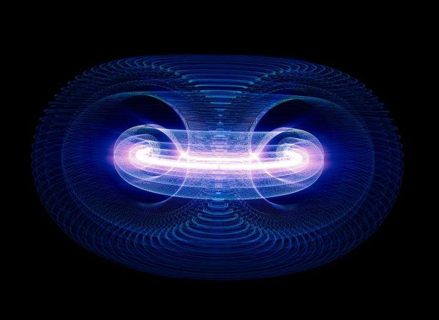
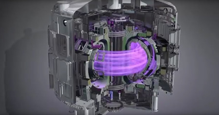

Tokamak
Cacámara toroidal con bobinas magnéticas es un aparato cuyo objetivo es obtener la fusión de partículas de plasma, lo que generaría grandes cantidades de energía, para así conseguir la reacción nuclear de fusión de dos partículas ligeras en una partícula más estable de peso medio y producir una energía en relación con la equivalencia de Einstein:

Las ventajas de la fusión sobre la fisión (que se utiliza hoy en las centrales nucleares) son: a) no produce desechos radiactivos directos y b) no precisa de un combustible no renovable y tan escaso como el uranio. En cambio, es mucho más difícil de iniciar: Hasta la fecha no se ha alcanzado el punto de equilibrio entre la energía que se necesita para acelerar y confinar el plasma y la que se obtiene con la fusión de algunas partículas. Sin embargo no hay razones teóricas para ello, sino sólo razones técnicas, que el proyecto internacional ITER trata de resolver.
El Tokamak fue ideado en los años 1950 por los físicos soviéticos Ígor Tam y Andréi Sájarov, basándose en las ideas propuestas por Oleg Lavrentiev en 1950


Comenta Aqui